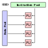

Computer science
Computer science (sometimes called computation science or computing science, but not to be confused with computational science or software engineering) is the study of processes that interact with data and that can be represented as data in the form of programs. It enables the use of algorithms to manipulate, store, and communicate digital information. A computer scientist studies the theory of computation and the practice of designing software systems.[1]
Its fields can be divided into theoretical and practical disciplines. Computational complexity theory is highly abstract, while computer graphics emphasizes real-world applications. Programming language theory considers approaches to the description of computational processes, while computer programming itself involves the use of programming languages and complex systems. Human–computer interaction considers the challenges in making computers useful, usable, and accessible.
Computer science deals with the theoretical foundations of computation and practical techniques for their application.
Contents
- 1 History
- 2 Etymology
- 3 Philosophy
- 4 Fields
- 5 Discoveries
- 6 Programming paradigms
- 7 Academia
- 8 Education
- 9 See also
- 10 Notes
- 11 References
- 12 Further reading
- 13 External links
History
The earliest foundations of what would become computer science predate the invention of the modern digital computer. Machines for calculating fixed numerical tasks such as the abacus have existed since antiquity, aiding in computations such as multiplication and division. Algorithms for performing computations have existed since antiquity, even before the development of sophisticated computing equipment.
Wilhelm Schickard designed and constructed the first working mechanical calculator in 1623. [4] In 1673, Gottfried Leibniz demonstrated a digital mechanical calculator, called the Stepped Reckoner. [5] He may be considered the first computer scientist and information theorist, for, among other reasons, documenting the binary number system. In 1820, Thomas de Colmar launched the mechanical calculator industry [note 1] when he released his simplified arithmometer, which was the first calculating machine strong enough and reliable enough to be used daily in an office environment. Charles Babbage started the design of the first automatic mechanical calculator, his Difference Engine, in 1822, which eventually gave him the idea of the first programmable mechanical calculator, his Analytical Engine. [6] He started developing this machine in 1834, and "in less than two years, he had sketched out many of the salient features of the modern computer". [7] "A crucial step was the adoption of a punched card system derived from the Jacquard loom" [7] making it infinitely programmable. [note 2] In 1843, during the translation of a French article on the Analytical Engine, Ada Lovelace wrote, in one of the many notes she included, an algorithm to compute the Bernoulli numbers, which is considered to be the first published algorithm ever specifically tailored for implementation on a computer. [8] Around 1885, Herman Hollerith invented the tabulator, which used punched cards to process statistical information; eventually his company became part of IBM. Following Babbage, although unaware of his earlier work, Percy Ludgate in 1909 published [9] the 2nd of the only two designs for mechanical analytical engines in history. In 1937, one hundred years after Babbage's impossible dream, Howard Aiken convinced IBM, which was making all kinds of punched card equipment and was also in the calculator business [10] to develop his giant programmable calculator, the ASCC/Harvard Mark I, based on Babbage's Analytical Engine, which itself used cards and a central computing unit. When the machine was finished, some hailed it as "Babbage's dream come true". [11]
Charles Babbage, sometimes referred to as the "father of computing". [2] Ada Lovelace is often credited with publishing the first algorithm intended for processing on a computer. [3]During the 1940s, as new and more powerful computing machines such as the Atanasoff–Berry computer and ENIAC were developed, the term computer came to refer to the machines rather than their human predecessors. [12] As it became clear that computers could be used for more than just mathematical calculations, the field of computer science broadened to study computation in general. In 1945, IBM founded the Watson Scientific Computing Laboratory at Columbia University in New York City. The renovated fraternity house on Manhattan's West Side was IBM's first laboratory devoted to pure science. The lab is the forerunner of IBM's Research Division, which today operates research facilities around the world. [13] Ultimately, the close relationship between IBM and the university was instrumental in the emergence of a new scientific discipline, with Columbia offering one of the first academic-credit courses in computer science in 1946. [14] Computer science began to be established as a distinct academic discipline in the 1950s and early 1960s. [15] [16] The world's first computer science degree program, the Cambridge Diploma in Computer Science, began at the University of Cambridge Computer Laboratory in 1953. The first computer science department in the United States was formed at Purdue University in 1962. [17] Since practical computers became available, many applications of computing have become distinct areas of study in their own rights.
Although many initially believed it was impossible that computers themselves could actually be a scientific field of study, in the late fifties it gradually became accepted among the greater academic population. [18] [19] It is the now well-known IBM brand that formed part of the computer science revolution during this time. IBM (short for International Business Machines) released the IBM 704 [20] and later the IBM 709 [21] computers, which were widely used during the exploration period of such devices. "Still, working with the IBM [computer] was frustrating […] if you had misplaced as much as one letter in one instruction, the program would crash, and you would have to start the whole process over again". [18] During the late 1950s, the computer science discipline was very much in its developmental stages, and such issues were commonplace. [19]
The concept of a field-effect transistor was proposed by Julius Edgar Lilienfeld in 1925. John Bardeen and Walter Brattain, while working under William Shockley at Bell Labs, built the first working transistor, the point-contact transistor, in 1947. [22] [23] In 1953, the University of Manchester built the first transistorized computer, called the Transistor Computer. [24] However, early junction transistors were relatively bulky devices that were difficult to manufacture on a mass-production basis, which limited them to a number of specialised applications. [25] The metal–oxide–silicon field-effect transistor (MOSFET, or MOS transistor) was invented by Mohamed Atalla and Dawon Kahng at Bell Labs in 1959. [26] [27] It was the first truly compact transistor that could be miniaturised and mass-produced for a wide range of uses. [25] The MOSFET made it possible to build high-density integrated circuit chips, [28] [29] leading to what is known as the computer revolution [30] or microcomputer revolution. [31]
Time has seen significant improvements in the usability and effectiveness of computing technology. [32] Modern society has seen a significant shift in the users of computer technology, from usage only by experts and professionals, to a near- ubiquitous user base. Initially, computers were quite costly, and some degree of humanitarian aid was needed for efficient use—in part from professional computer operators. As computer adoption became more widespread and affordable, less human assistance was needed for common usage.
Contributions
Despite its short history as a formal academic discipline, computer science has made a number of fundamental contributions to science and society—in fact, along with electronics, it is a founding science of the current epoch of human history called the Information Age and a driver of the information revolution, seen as the third major leap in human technological progress after the Industrial Revolution (1750–1850 CE) and the Agricultural Revolution (8000–5000 BCE).
These contributions include:
- The start of the " Digital Revolution", which includes the current Information Age and the Internet. [34]
- A formal definition of computation and computability, and proof that there are computationally unsolvable and intractable problems. [35]
- The concept of a programming language, a tool for the precise expression of methodological information at various levels of abstraction. [36]
- In cryptography, breaking the Enigma code was an important factor contributing to the Allied victory in World War II. [33]
- Scientific computing enabled practical evaluation of processes and situations of great complexity, as well as experimentation entirely by software. It also enabled advanced study of the mind, and mapping of the human genome became possible with the Human Genome Project. [34] Distributed computing projects such as Folding@home explore protein folding.
- Algorithmic trading has increased the efficiency and liquidity of financial markets by using artificial intelligence, machine learning, and other statistical and numerical techniques on a large scale. [37] High frequency algorithmic trading can also exacerbate volatility. [38]
- Computer graphics and computer-generated imagery have become ubiquitous in modern entertainment, particularly in television, cinema, advertising, animation and video games. Even films that feature no explicit CGI are usually "filmed" now on digital cameras, or edited or post-processed using a digital video editor. [39] [40]
- Simulation of various processes, including computational fluid dynamics, physical, electrical, and electronic systems and circuits, as well as societies and social situations (notably war games) along with their habitats, among many others. Modern computers enable optimization of such designs as complete aircraft. Notable in electrical and electronic circuit design are SPICE, [41] as well as software for physical realization of new (or modified) designs. The latter includes essential design software for integrated circuits.
- Artificial intelligence is becoming increasingly important as it gets more efficient and complex. There are many applications of AI, some of which can be seen at home, such as robotic vacuum cleaners. It is also present in video games and on the modern battlefield in drones, anti-missile systems, and squad support robots. [42]
- Human–computer interaction combines novel algorithms with design strategies that enable rapid human performance, low error rates, ease in learning, and high satisfaction. Researchers use ethnographic observation and automated data collection to understand user needs, then conduct usability tests to refine designs. Key innovations include the direct manipulation, selectable web links, touchscreen designs, mobile applications, and virtual reality.
Etymology
Although first proposed in 1956, [19] the term "computer science" appears in a 1959 article in Communications of the ACM, [43] in which Louis Fein argues for the creation of a Graduate School in Computer Sciences analogous to the creation of Harvard Business School in 1921, [44] justifying the name by arguing that, like management science, the subject is applied and interdisciplinary in nature, while having the characteristics typical of an academic discipline. [43] His efforts, and those of others such as numerical analyst George Forsythe, were rewarded: universities went on to create such departments, starting with Purdue in 1962. [45] Despite its name, a significant amount of computer science does not involve the study of computers themselves. Because of this, several alternative names have been proposed. [46] Certain departments of major universities prefer the term computing science, to emphasize precisely that difference. Danish scientist Peter Naur suggested the term datalogy, [47] to reflect the fact that the scientific discipline revolves around data and data treatment, while not necessarily involving computers. The first scientific institution to use the term was the Department of Datalogy at the University of Copenhagen, founded in 1969, with Peter Naur being the first professor in datalogy. The term is used mainly in the Scandinavian countries. An alternative term, also proposed by Naur, is data science; this is now used for a multi-disciplinary field of data analysis, including statistics and databases.
Also, in the early days of computing, a number of terms for the practitioners of the field of computing were suggested in the Communications of the ACM— turingineer, turologist, flow-charts-man, applied meta-mathematician, and applied epistemologist. [48] Three months later in the same journal, comptologist was suggested, followed next year by hypologist. [49] The term [50] In Europe, terms derived from contracted translations of the expression "automatic information" (e.g. "informazione automatica" in Italian) or "information and mathematics" are often used, e.g. informatique (French), Informatik (German), informatica (Italian, Dutch), informática (Spanish, Portuguese), informatika ( Slavic languages and Hungarian) or pliroforiki ( πληροφορική, which means informatics) in Greek. Similar words have also been adopted in the UK (as in the School of Informatics of the University of Edinburgh). [51] "In the U.S., however, informatics is linked with applied computing, or computing in the context of another domain." [52]
A folkloric quotation, often attributed to—but almost certainly not first formulated by— Edsger Dijkstra, states that "computer science is no more about computers than astronomy is about telescopes." [note 3] The design and deployment of computers and computer systems is generally considered the province of disciplines other than computer science. For example, the study of computer hardware is usually considered part of computer engineering, while the study of commercial computer systems and their deployment is often called information technology or information systems. However, there has been much cross-fertilization of ideas between the various computer-related disciplines. Computer science research also often intersects other disciplines, such as philosophy, cognitive science, linguistics, mathematics, physics, biology, statistics, and logic.
Computer science is considered by some to have a much closer relationship with mathematics than many scientific disciplines, with some observers saying that computing is a mathematical science. [15] Early computer science was strongly influenced by the work of mathematicians such as Kurt Gödel, Alan Turing, Rózsa Péter and Alonzo Church and there continues to be a useful interchange of ideas between the two fields in areas such as mathematical logic, category theory, domain theory, and algebra. [19]
The relationship between Computer Science and Software Engineering is a contentious issue, which is further muddied by disputes over what the term "Software Engineering" means, and how computer science is defined. [53] David Parnas, taking a cue from the relationship between other engineering and science disciplines, has claimed that the principal focus of computer science is studying the properties of computation in general, while the principal focus of software engineering is the design of specific computations to achieve practical goals, making the two separate but complementary disciplines. [54]
The academic, political, and funding aspects of computer science tend to depend on whether a department formed with a mathematical emphasis or with an engineering emphasis. Computer science departments with a mathematics emphasis and with a numerical orientation consider alignment with computational science. Both types of departments tend to make efforts to bridge the field educationally if not across all research.
Philosophy
A number of computer scientists have argued for the distinction of three separate paradigms in computer science. Peter Wegner argued that those paradigms are science, technology, and mathematics. [55] Peter Denning's working group argued that they are theory, abstraction (modeling), and design. [56] Amnon H. Eden described them as the "rationalist paradigm" (which treats computer science as a branch of mathematics, which is prevalent in theoretical computer science, and mainly employs deductive reasoning), the "technocratic paradigm" (which might be found in engineering approaches, most prominently in software engineering), and the "scientific paradigm" (which approaches computer-related artifacts from the empirical perspective of natural sciences, identifiable in some branches of artificial intelligence). [57] Computer science focuses on methods involved in design, specification, programming, verification, implementation and testing of human-made computing systems. [58]
Fields
Computer science is no more about computers than astronomy is about telescopes.
As a discipline, computer science spans a range of topics from theoretical studies of algorithms and the limits of computation to the practical issues of implementing computing systems in hardware and software. [59] [60] CSAB, formerly called Computing Sciences Accreditation Board—which is made up of representatives of the Association for Computing Machinery (ACM), and the IEEE Computer Society (IEEE CS) [61]—identifies four areas that it considers crucial to the discipline of computer science: theory of computation, algorithms and data structures, programming methodology and languages, and computer elements and architecture. In addition to these four areas, CSAB also identifies fields such as software engineering, artificial intelligence, computer networking and communication, database systems, parallel computation, distributed computation, human–computer interaction, computer graphics, operating systems, and numerical and symbolic computation as being important areas of computer science. [59]
Theoretical computer science
Theoretical Computer Science is mathematical and abstract in spirit, but it derives its motivation from practical and everyday computation. Its aim is to understand the nature of computation and, as a consequence of this understanding, provide more efficient methodologies. All studies related to mathematical, logic and formal concepts and methods could be considered as theoretical computer science, provided that the motivation is clearly drawn from the field of computing.
Data structures and algorithms
Data structures and algorithms are the study of commonly used computational methods and their computational efficiency.
| O(n2) | ||||
| Analysis of algorithms | Algorithms | Data structures | Combinatorial optimization | Computational geometry |
Theory of computation
According to Peter Denning, the fundamental question underlying computer science is, "What can be (efficiently) automated?" [15] Theory of computation is focused on answering fundamental questions about what can be computed and what amount of resources are required to perform those computations. In an effort to answer the first question, computability theory examines which computational problems are solvable on various theoretical models of computation. The second question is addressed by computational complexity theory, which studies the time and space costs associated with different approaches to solving a multitude of computational problems.
The famous P = NP? problem, one of the Millennium Prize Problems, [62] is an open problem in the theory of computation.
| P = NP? | GNITIRW-TERCES |

|
||
| Automata theory | Computability theory | Computational complexity theory | Cryptography | Quantum computing theory |
Information and coding theory
Information theory is related to the quantification of information. This was developed by Claude Shannon to find fundamental limits on signal processing operations such as compressing data and on reliably storing and communicating data. [63] Coding theory is the study of the properties of codes (systems for converting information from one form to another) and their fitness for a specific application. Codes are used for data compression, cryptography, error detection and correction, and more recently also for network coding. Codes are studied for the purpose of designing efficient and reliable data transmission methods. [64]
Programming language theory
Programming language theory is a branch of computer science that deals with the design, implementation, analysis, characterization, and classification of programming languages and their individual features. It falls within the discipline of computer science, both depending on and affecting mathematics, software engineering, and linguistics. It is an active research area, with numerous dedicated academic journals.
| Type theory | Compiler design | Programming languages |
Formal methods
Formal methods are a particular kind of mathematically based technique for the specification, development and verification of software and hardware systems. [65] The use of formal methods for software and hardware design is motivated by the expectation that, as in other engineering disciplines, performing appropriate mathematical analysis can contribute to the reliability and robustness of a design. They form an important theoretical underpinning for software engineering, especially where safety or security is involved. Formal methods are a useful adjunct to software testing since they help avoid errors and can also give a framework for testing. For industrial use, tool support is required. However, the high cost of using formal methods means that they are usually only used in the development of high-integrity and life-critical systems, where safety or security is of utmost importance. Formal methods are best described as the application of a fairly broad variety of theoretical computer science fundamentals, in particular logic calculi, formal languages, automata theory, and program semantics, but also type systems and algebraic data types to problems in software and hardware specification and verification.
Computer systems
Computer architecture and computer engineering
Computer architecture, or digital computer organization, is the conceptual design and fundamental operational structure of a computer system. It focuses largely on the way by which the central processing unit performs internally and accesses addresses in memory. [66] The field often involves disciplines of computer engineering and electrical engineering, selecting and interconnecting hardware components to create computers that meet functional, performance, and cost goals.
|  | ||
| Digital logic | Microarchitecture | Multiprocessing |

|
||
| Ubiquitous computing | Systems architecture | Operating systems |
Computer performance analysis
Computer performance analysis is the study of work flowing through computers with the general goals of improving throughput, controlling response time, using resources efficiently, eliminating bottlenecks, and predicting performance under anticipated peak loads. [67] Benchmarks are used to compare the performance of systems carrying different chips and/or system architectures. [68]
Concurrent, parallel and distributed systems
Concurrency is a property of systems in which several computations are executing simultaneously, and potentially interacting with each other. [69] A number of mathematical models have been developed for general concurrent computation including Petri nets, process calculi and the Parallel Random Access Machine model. [70] When multiple computers are connected in a network while using concurrency, this is known as a distributed system. Computers within that distributed system have their own private memory, and information can be exchanged to achieve common goals. [71]
Computer networks
This branch of computer science aims to manage networks between computers worldwide.
Computer security and cryptography
Computer security is a branch of computer technology with an objective of protecting information from unauthorized access, disruption, or modification while maintaining the accessibility and usability of the system for its intended users. Cryptography is the practice and study of hiding (encryption) and therefore deciphering (decryption) information. Modern cryptography is largely related to computer science, for many encryption and decryption algorithms are based on their computational complexity.
Databases
A database is intended to organize, store, and retrieve large amounts of data easily. Digital databases are managed using database management systems to store, create, maintain, and search data, through database models and query languages.
Computer applications
Computer graphics and visualization
Computer graphics is the study of digital visual contents and involves the synthesis and manipulation of image data. The study is connected to many other fields in computer science, including computer vision, image processing, and computational geometry, and is heavily applied in the fields of special effects and video games.
Human–computer interaction
Research that develops theories, principles, and guidelines for user interface designers, so they can create satisfactory user experiences with desktop, laptop, and mobile devices.
Scientific computing
Scientific computing (or computational science) is the field of study concerned with constructing mathematical models and quantitative analysis techniques and using computers to analyze and solve scientific problems. In practical use, it is typically the application of computer simulation and other forms of computation to problems in various scientific disciplines.
| Numerical analysis | Computational physics | Computational chemistry | Bioinformatics |
Artificial intelligence
Artificial intelligence (AI) aims to or is required to synthesize goal-orientated processes such as problem-solving, decision-making, environmental adaptation, learning, and communication found in humans and animals. From its origins in cybernetics and in the Dartmouth Conference (1956), artificial intelligence research has been necessarily cross-disciplinary, drawing on areas of expertise such as applied mathematics, symbolic logic, semiotics, electrical engineering, philosophy of mind, neurophysiology, and social intelligence. AI is associated in the popular mind with robotic development, but the main field of practical application has been as an embedded component in areas of software development, which require computational understanding. The starting point in the late 1940s was Alan Turing's question "Can computers think?", and the question remains effectively unanswered, although the Turing test is still used to assess computer output on the scale of human intelligence. But the automation of evaluative and predictive tasks has been increasingly successful as a substitute for human monitoring and intervention in domains of computer application involving complex real-world data.

|

|
|
| Machine learning | Computer vision | Image processing |
| Pattern recognition | Data mining | Evolutionary computation |
| Knowledge representation and reasoning | Natural language processing | Robotics |
Software engineering
Software engineering is the study of designing, implementing, and modifying software in order to ensure it is of high quality, affordable, maintainable, and fast to build. It is a systematic approach to software design, involving the application of engineering practices to software. Software engineering deals with the organizing and analyzing of software—it doesn't just deal with the creation or manufacture of new software, but its internal maintenance and arrangement.
Discoveries
The philosopher of computing Bill Rapaport noted three Great Insights of Computer Science: [72]
- Gottfried Wilhelm Leibniz's, George Boole's, Alan Turing's, Claude Shannon's, and Samuel Morse's insight: there are only two objects that a computer has to deal with in order to represent "anything". [note 4]
-
- All the information about any computable problem can be represented using only 0 and 1 (or any other bistable pair that can flip-flop between two easily distinguishable states, such as "on/off", "magnetized/de-magnetized", "high-voltage/low-voltage", etc.).
- Alan Turing's insight: there are only five actions that a computer has to perform in order to do "anything".
-
- Every algorithm can be expressed in a language for a computer consisting of only five basic instructions:
[73]
- move left one location;
- move right one location;
- read symbol at current location;
- print 0 at current location;
- print 1 at current location.
- Every algorithm can be expressed in a language for a computer consisting of only five basic instructions:
[73]
- Corrado Böhm and Giuseppe Jacopini's insight: there are only three ways of combining these actions (into more complex ones) that are needed in order for a computer to do "anything". [74]
-
- Only three rules are needed to combine any set of basic instructions into more complex ones:
- sequence: first do this, then do that;
- selection: IF such-and-such is the case, THEN do this, ELSE do that;
- repetition: WHILE such-and-such is the case DO this.
- Note that the three rules of Boehm's and Jacopini's insight can be further simplified with the use of goto (which means it is more elementary than structured programming).
- Only three rules are needed to combine any set of basic instructions into more complex ones:
Programming paradigms
Programming languages can be used to accomplish different tasks in different ways. Common programming paradigms include:
- Functional programming, a style of building the structure and elements of computer programs that treats computation as the evaluation of mathematical functions and avoids state and mutable data. It is a declarative programming paradigm, which means programming is done with expressions or declarations instead of statements. [75]
- Imperative programming, a programming paradigm that uses statements that change a program's state. [76] In much the same way that the imperative mood in natural languages expresses commands, an imperative program consists of commands for the computer to perform. Imperative programming focuses on describing how a program operates.
- Object-oriented programming, a programming paradigm based on the concept of "objects", which may contain data, in the form of fields, often known as attributes; and code, in the form of procedures, often known as methods. A feature of objects is that an object's procedures can access and often modify the data fields of the object with which they are associated. Thus Object-oriented computer programs are made out of objects that interact with one another. [77]
Many languages offer support for multiple paradigms, making the distinction more a matter of style than of technical capabilities. [78]
Academia
Conferences are important events for computer science research. During these conferences, researchers from the public and private sectors present their recent work and meet. Unlike in most other academic fields, in computer science, the prestige of conference papers is greater than that of journal publications. [79] [80] One proposed explanation for this is the quick development of this relatively new field requires rapid review and distribution of results, a task better handled by conferences than by journals. [81]
Education
Computer Science, known by its near synonyms, Computing, Computer Studies, Information Technology (IT) and Information and Computing Technology (ICT), has been taught in UK schools since the days of batch processing, mark sensitive cards and paper tape but usually to a select few students. [82] In 1981, the BBC produced a micro-computer and classroom network and Computer Studies became common for GCE O level students (11–16-year-old), and Computer Science to A level students. Its importance was recognised, and it became a compulsory part of the National Curriculum, for Key Stage 3 & 4. In September 2014 it became an entitlement for all 7,000,000 pupils over the age of 4. [83]
In the US, with 14,000 school districts deciding the curriculum, provision was fractured. [84] According to a 2010 report by the Association for Computing Machinery (ACM) and Computer Science Teachers Association (CSTA), only 14 out of 50 states have adopted significant education standards for high school computer science. [85]
Israel, New Zealand, and South Korea have included computer science in their national secondary education curricula, [86] [87] and several others are following. [88]
Challenges
In many countries, there is a significant gender gap in computer science education. In 2012, only 20 percent of computer science degrees in the United States were awarded to women. [89] The gender gap is also a problem in other western countries. [90] The gap is smaller, or nonexistent, in some parts of the world. In 2011, women earned half of the computer science degrees in Malaysia. [91] In 2001, 55 percent of computer science graduates in Guyana were women. [90]
See also
- Information technology
- List of computer scientists
- List of important publications in computer science
- List of pioneers in computer science
- List of unsolved problems in computer science
- List of terms relating to algorithms and data structures
- Software engineering
Computer science – Wikipedia book
Notes
- In 1851
- "The introduction of punched cards into the new engine was important not only as a more convenient form of control than the drums, or because programs could now be of unlimited extent, and could be stored and repeated without the danger of introducing errors in setting the machine by hand; it was important also because it served to crystallize Babbage's feeling that he had invented something really new, something much more than a sophisticated calculating machine." Bruce Collier, 1970
- See the entry "Computer science" on Wikiquote for the history of this quotation.
- The word "anything" is written in quotation marks because there are things that computers cannot do. One example is: to answer the question if an arbitrary given computer program will eventually finish or run forever (the Halting problem).
References
- "WordNet Search—3.1". Wordnetweb.princeton.edu . Retrieved May 14, 2012 .
- "Charles Babbage Institute: Who Was Charles Babbage?". cbi.umn.edu . Retrieved December 28, 2016 .
- "Ada Lovelace | Babbage Engine | Computer History Museum". www.computerhistory.org . Retrieved December 28, 2016 .
- "Wilhelm Schickard – Ein Computerpionier" (PDF) (in German).
- Keates, Fiona (June 25, 2012). "A Brief History of Computing". The Repository. The Royal Society.
- "Science Museum—Introduction to Babbage". Archived from the original on September 8, 2006 . Retrieved September 24, 2006 .
- Anthony Hyman (1982). Charles Babbage, pioneer of the computer.
- "A Selection and Adaptation From Ada's Notes found in Ada, The Enchantress of Numbers," by Betty Alexandra Toole Ed.D. Strawberry Press, Mill Valley, CA". Archived from the original on February 10, 2006 . Retrieved May 4, 2006 .
- The John Gabriel Byrne Computer Science Collection
- "In this sense Aiken needed IBM, whose technology included the use of punched cards, the accumulation of numerical data, and the transfer of numerical data from one register to another", Bernard Cohen, p.44 (2000)
- Brian Randell, p. 187, 1975
- The Association for Computing Machinery (ACM) was founded in 1947.
- "IBM Archives: 1945". Ibm.com . Retrieved March 19, 2019 .
- "IBM100 – The Origins of Computer Science". Ibm.com. September 15, 1995 . Retrieved March 19, 2019 .
- Denning, Peter J. (2000). "Computer Science: The Discipline" (PDF). Encyclopedia of Computer Science. Archived from the original (PDF) on May 25, 2006.
- "Some EDSAC statistics". University of Cambridge . Retrieved November 19, 2011 .
- "Computer science pioneer Samuel D. Conte dies at 85". Purdue Computer Science. July 1, 2002 . Retrieved December 12, 2014 .
- Levy, Steven (1984). Hackers: Heroes of the Computer Revolution . Doubleday. ISBN 978-0-385-19195-1 .
- Tedre, Matti (2014). The Science of Computing: Shaping a Discipline. Taylor and Francis / CRC Press.
- "IBM 704 Electronic Data Processing System—CHM Revolution". Computerhistory.org . Retrieved July 7, 2013 .
- "IBM 709: a powerful new data processing system" (PDF). Computer History Museum. Archived from the original (PDF) on March 4, 2016 . Retrieved December 12, 2014 .
- Lee, Thomas H. (2003). The Design of CMOS Radio-Frequency Integrated Circuits (PDF). Cambridge University Press. ISBN 9781139643771 .
- Puers, Robert; Baldi, Livio; Voorde, Marcel Van de; Nooten, Sebastiaan E. van (2017). Nanoelectronics: Materials, Devices, Applications, 2 Volumes . John Wiley & Sons. p. 14. ISBN 9783527340538 .
- Lavington, Simon (1998), A History of Manchester Computers (2 ed.), Swindon: The British Computer Society, pp. 34–35
- Moskowitz, Sanford L. (2016). Advanced Materials Innovation: Managing Global Technology in the 21st century . John Wiley & Sons. pp. 165–167. ISBN 9780470508923 .
- "1960 - Metal Oxide Semiconductor (MOS) Transistor Demonstrated". The Silicon Engine. Computer History Museum.
- Lojek, Bo (2007). History of Semiconductor Engineering. Springer Science & Business Media. pp. 321–3. ISBN 9783540342588 .
- "Who Invented the Transistor?". Computer History Museum . December 4, 2013 . Retrieved July 20, 2019 .
- Hittinger, William C. (1973). "METAL-OXIDE-SEMICONDUCTOR TECHNOLOGY". Scientific American. 229 (2): 48–59. Bibcode: 1973SciAm.229b..48H. doi: 10.1038/scientificamerican0873-48. ISSN 0036-8733. JSTOR 24923169.
- Fossum, Jerry G.; Trivedi, Vishal P. (2013). Fundamentals of Ultra-Thin-Body MOSFETs and FinFETs . Cambridge University Press. p. vii. ISBN 9781107434493 .
-
Malmstadt, Howard V.; Enke, Christie G.; Crouch, Stanley R. (1994).
Making the Right Connections: Microcomputers and Electronic Instrumentation
.
American Chemical Society. p. 389.
ISBN
9780841228610
.
The relative simplicity and low power requirements of MOSFETs have fostered today's microcomputer revolution.
- "Timeline of Computer History". Computer History Museum . Retrieved November 24, 2015 .
- David Kahn, The Codebreakers, 1967, ISBN 0-684-83130-9.
- "Computer Science : Achievements and Challenges circa 2000" (PDF). Archived from the original (PDF) on September 11, 2006 . Retrieved January 11, 2007 .
- Constable, R.L. (March 2000). "Computer Science: Achievements and Challenges circa 2000" (PDF).
-
Abelson, H.; G.J. Sussman with J. Sussman (1996).
Structure and Interpretation of Computer Programs
(2nd ed.). MIT Press.
ISBN
978-0-262-01153-2
.
The computer revolution is a revolution in the way we think and in the way we express what we think. The essence of this change is the emergence of what might best be called procedural epistemology – the study of the structure of knowledge from an imperative point of view, as opposed to the more declarative point of view taken by classical mathematical subjects.
- "Black box traders are on the march". The Telegraph. August 26, 2006. Archived from the original on June 21, 2008.
- Kirilenko, Andrei A.; Kyle, Albert S.; Samadi, Mehrdad; Tuzun, Tugkan (January 6, 2017). "The Impact of High Frequency Trading on an Electronic Market" (PDF). Papers.ssrn.com. doi: 10.2139/ssrn.1686004. SSRN 1686004 .
- Maly, Timy (January 30, 2013). "How Digital Filmmakers Produced a Gorgeous Sci-Fi Movie on a Kickstarter Budget". Wired . Retrieved November 24, 2015 .
- Matthau, Charles (January 8, 2015). "How Tech Has Shaped Film Making: The Film vs. Digital Debate Is Put to Rest". Wired . Retrieved November 24, 2015 .
- Muhammad H. Rashid, 2016. SPICE for Power Electronics and Electric Power. CRC Press. p. 6. ISBN 978-1-4398-6047-2.
- Marko B. Popovic, 2019. Biomechatronics. Elsevier Science. p. 501. ISBN 978-0-12-813041-4.
- Louis Fine (1959). "The Role of the University in Computers, Data Processing, and Related Fields". Communications of the ACM. 2 (9): 7–14. doi: 10.1145/368424.368427.
- "Stanford University Oral History". Stanford University . Retrieved May 30, 2013 .
- Donald Knuth (1972). "George Forsythe and the Development of Computer Science". Comms. ACM . Archived October 20, 2013, at the Wayback Machine
- Matti Tedre (2006). "The Development of Computer Science: A Sociocultural Perspective" (PDF). p. 260 . Retrieved December 12, 2014 .
- Peter Naur (1966). "The science of datalogy". Communications of the ACM. 9 (7): 485. doi: 10.1145/365719.366510.
- Weiss, E.A.; Corley, Henry P.T. "Letters to the editor". Communications of the ACM. 1 (4): 6. doi: 10.1145/368796.368802.
- Communications of the ACM 2(1):p.4
- IEEE Computer 28(12): p.136
- P. Mounier-Kuhn, L'Informatique en France, de la seconde guerre mondiale au Plan Calcul. L'émergence d'une science, Paris, PUPS, 2010, ch. 3 & 4.
- Groth, Dennis P. (March 13, 2010). "Why an Informatics Degree? | February 2010 | Communications of the ACM". Cacm.acm.org . Retrieved March 19, 2019 .
- Tedre, M. (2011). "Computing as a Science: A Survey of Competing Viewpoints". Minds and Machines. 21 (3): 361–387. doi: 10.1007/s11023-011-9240-4.
- Parnas, D.L. (1998). "Software engineering programmes are not computer science programmes". Annals of Software Engineering. 6: 19–37. doi: 10.1023/A:1018949113292.
- Wegner, P. (October 13–15, 1976). Research paradigms in computer science—Proceedings of the 2nd international Conference on Software Engineering. San Francisco, California, United States: IEEE Computer Society Press, Los Alamitos, CA.
- Denning, P.J.; Comer, D.E.; Gries, D.; Mulder, M.C.; Tucker, A.; Turner, A.J.; Young, P.R. (January 1989). "Computing as a discipline". Communications of the ACM. 32: 9–23. doi: 10.1145/63238.63239.
- Eden, A.H. (2007). "Three Paradigms of Computer Science" (PDF). Minds and Machines . 17 (2): 135–167. CiteSeerX 10.1.1.304.7763 . doi: 10.1007/s11023-007-9060-8. Archived from the original (PDF) on February 15, 2016.
- Turner, Raymond, Angius, Nicola , Primiero, Giuseppe. (Spring 2019). "The Philosophy of Computer Science", The Stanford Encyclopedia of Philosophy, Edward N. Zalta (ed.), URL = < https://plato.stanford.edu/archives/spr2019/entries/computer-science/>.
- "Computer Science as a Profession". Computing Sciences Accreditation Board. May 28, 1997. Archived from the original on June 17, 2008 . Retrieved May 23, 2010 .
- Committee on the Fundamentals of Computer Science: Challenges and Opportunities, National Research Council (2004). Computer Science: Reflections on the Field, Reflections from the Field . National Academies Press. ISBN 978-0-309-09301-9 .
- "CSAB Leading Computer Education". CSAB. August 3, 2011 . Retrieved November 19, 2011 .
- Clay Mathematics Institute P = NP Archived October 14, 2013, at the Wayback Machine
- P. Collins, Graham (October 14, 2002). "Claude E. Shannon: Founder of Information Theory". Scientific American . Retrieved December 12, 2014 .
- Van-Nam Huynh; Vladik Kreinovich; Songsak Sriboonchitta; 2012. Uncertainty Analysis in Econometrics with Applications. Springer Science & Business Media. p. 63. ISBN 978-3-642-35443-4.
- Phillip A. Laplante, 2010. Encyclopedia of Software Engineering Three-Volume Set (Print). CRC Press. p. 309. ISBN 978-1-351-24926-3.
- A. Thisted, Ronald (April 7, 1997). "Computer Architecture" (PDF). The University of Chicago.
- Wescott, Bob (2013). The Every Computer Performance Book, Chapter 3: Useful laws. CreateSpace. ISBN 978-1-4826-5775-3 .
- Lawrence A. Tomei, 2009. Lexicon of Online and Distance Learning. R&L Education. p. 29. ISBN 978-1-60709-285-8.
- Jiacun Wang, 2017. Real-Time Embedded Systems. Wiley. p. 12. ISBN 978-1-119-42070-5.
- Gordana Dodig-Crnkovic; Raffaela Giovagnoli; 2013. Computing Nature: Turing Centenary Perspective. Springer Science & Business Media. p. 247. ISBN 978-3-642-37225-4.
- Simon Elias Bibri; 2018. Smart Sustainable Cities of the Future: The Untapped Potential of Big Data Analytics and Context–Aware Computing for Advancing Sustainability. Springer. p. 74. ISBN 978-3-319-73981-6.
- Rapaport, William J. (September 20, 2013). "What Is Computation?". State University of New York at Buffalo.
- B. Jack Copeland, 2012. Alan Turing's Electronic Brain: The Struggle to Build the ACE, the World's Fastest Computer. OUP Oxford. p. 107. ISBN 978-0-19-960915-4.
- Charles W. Herbert, 2010. An Introduction to Programming Using Alice 2.2. Cengage Learning. p. 122. ISBN 0-538-47866-7.
- Md. Rezaul Karim; Sridhar Alla; 2017. Scala and Spark for Big Data Analytics: Explore the concepts of functional programming, data streaming, and machine learning. Packt Publishing Ltd. p. 87. ISBN 978-1-78355-050-0.
- Lex Sheehan, 2017. Learning Functional Programming in Go: Change the way you approach your applications using functional programming in Go. Packt Publishing Ltd. p. 16. ISBN 978-1-78728-604-7.
- Evelio Padilla, 2015. Substation Automation Systems: Design and Implementation. Wiley. p. 245. ISBN 978-1-118-98730-8.
- "Multi-Paradigm Programming Language". developer.mozilla.org. Mozilla Foundation. Archived from the original on August 21, 2013.
- Meyer, Bertrand (April 2009). "Viewpoint: Research evaluation for computer science". Communications of the ACM. 25 (4): 31–34. doi: 10.1145/1498765.1498780.
- Patterson, David (August 1999). "Evaluating Computer Scientists and Engineers For Promotion and Tenure". Computing Research Association.
- Fortnow, Lance (August 2009). "Viewpoint: Time for Computer Science to Grow Up". Communications of the ACM. 52 (8): 33–35. doi: 10.1145/1536616.1536631.
- Burns, Judith (April 3, 2016). "Computer science A-level 1970s style" . Retrieved February 9, 2019 .
- Jones, Michael (October 1915). "Developing a Computer Science Curriculum in England: Exploring Approaches in the USA" (PDF). Winston Churchill Memorial Trust . Retrieved February 9, 2019 .
- "Computer Science: Not Just an Elective Anymore". Education Week. February 25, 2014.
- Wilson, Cameron; Sudol, Leigh Ann; Stephenson, Chris; Stehlik, Mark (2010). "Running on Empty: The Failure to Teach K–12 Computer Science in the Digital Age" (PDF). ACM.
- "A is for algorithm". The Economist. April 26, 2014.
- "Computing at School International comparisons" (PDF) . Retrieved July 20, 2015 .
- "Adding Coding to the Curriculum". The New York Times. March 23, 2014.
- "Percentage of Bachelor's degrees conferred to women, by major (1970–2012)". June 14, 2014 . Retrieved July 20, 2015 .
- James, Justin. "IT gender gap: Where are the female programmers?". TechRepublic.
- "what [sic!] gender is science" (PDF). Archived from the original (PDF) on September 24, 2015 . Retrieved July 20, 2015 .
Further reading
Overview
-
Tucker, Allen B. (2004).
Computer Science Handbook (2nd ed.). Chapman and Hall/CRC.
ISBN
978-1-58488-360-9
.
- "Within more than 70 chapters, every one new or significantly revised, one can find any kind of information and references about computer science one can imagine. […] all in all, there is absolute nothing about Computer Science that can not be found in the 2.5 kilogram-encyclopaedia with its 110 survey articles […]." (Christoph Meinel, Zentralblatt MATH )
-
van Leeuwen, Jan (1994).
Handbook of Theoretical Computer Science. The MIT Press.
ISBN
978-0-262-72020-5
.
- "[…] this set is the most unique and possibly the most useful to the [theoretical computer science] community, in support both of teaching and research […]. The books can be used by anyone wanting simply to gain an understanding of one of these areas, or by someone desiring to be in research in a topic, or by instructors wishing to find timely information on a subject they are teaching outside their major areas of expertise." (Rocky Ross, SIGACT News )
-
Ralston, Anthony;
Reilly, Edwin D.;
Hemmendinger, David (2000).
Encyclopedia of Computer Science
(4th ed.). Grove's Dictionaries.
ISBN
978-1-56159-248-7
.
- "Since 1976, this has been the definitive reference work on computer, computing, and computer science. […] Alphabetically arranged and classified into broad subject areas, the entries cover hardware, computer systems, information and data, software, the mathematics of computing, theory of computation, methodologies, applications, and computing milieu. The editors have done a commendable job of blending historical perspective and practical reference information. The encyclopedia remains essential for most public and academic library reference collections." (Joe Accardin, Northeastern Illinois Univ., Chicago)
- Edwin D. Reilly (2003). Milestones in Computer Science and Information Technology . Greenwood Publishing Group. ISBN 978-1-57356-521-9 .
Selected literature
- Knuth, Donald E. (1996). Selected Papers on Computer Science. CSLI Publications, Cambridge University Press.
- Collier, Bruce (1990). The little engine that could've: The calculating machines of Charles Babbage . Garland Publishing Inc. ISBN 978-0-8240-0043-1 .
- Cohen, Bernard (2000). Howard Aiken, Portrait of a computer pioneer. The MIT press. ISBN 978-0-262-53179-5 .
- Tedre, Matti (2014). The Science of Computing: Shaping a Discipline. CRC Press, Taylor & Francis.
-
Randell, Brian (1973).
The origins of Digital computers, Selected Papers. Springer-Verlag.
ISBN
978-3-540-06169-4
.
- "Covering a period from 1966 to 1993, its interest lies not only in the content of each of these papers – still timely today – but also in their being put together so that ideas expressed at different times complement each other nicely." (N. Bernard, Zentralblatt MATH)
Articles
- Peter J. Denning. Is computer science science? , Communications of the ACM, April 2005.
- Peter J. Denning, Great principles in computing curricula , Technical Symposium on Computer Science Education, 2004.
- Research evaluation for computer science, Informatics Europe report. Shorter journal version: Bertrand Meyer, Christine Choppy, Jan van Leeuwen and Jorgen Staunstrup, Research evaluation for computer science, in Communications of the ACM, vol. 52, no. 4, pp. 31–34, April 2009.
Curriculum and classification
- Association for Computing Machinery. 1998 ACM Computing Classification System. 1998.
- Joint Task Force of Association for Computing Machinery (ACM), Association for Information Systems (AIS) and IEEE Computer Society (IEEE CS). Computing Curricula 2005: The Overview Report. September 30, 2005.
- Norman Gibbs, Allen Tucker. "A model curriculum for a liberal arts degree in computer science". Communications of the ACM, Volume 29 Issue 3, March 1986.
External links
- Computer science at Curlie
- Scholarly Societies in Computer Science
- What is Computer Science?
- Best Papers Awards in Computer Science since 1996
- Photographs of computer scientists by Bertrand Meyer
- EECS.berkeley.edu
Bibliography and academic search engines
- CiteSeer x ( article): search engine, digital library and repository for scientific and academic papers with a focus on computer and information science.
- DBLP Computer Science Bibliography ( article): computer science bibliography website hosted at Universität Trier, in Germany.
- The Collection of Computer Science Bibliographies ( article)
Professional organizations
- Association for Computing Machinery
- IEEE Computer Society
- Informatics Europe
- AAAI
- AAAS Computer Science
Misc
- Computer Science—Stack Exchange: a community-run question-and-answer site for computer science
- What is computer science
- Is computer science science?
- Computer Science (Software) Must be Considered as an Independent Discipline.
This page was last edited on 14 November 2019, at 00:19 (UTC).